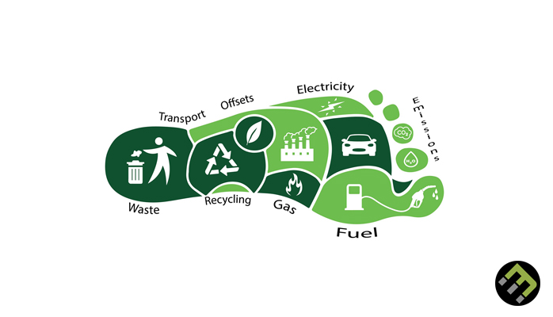
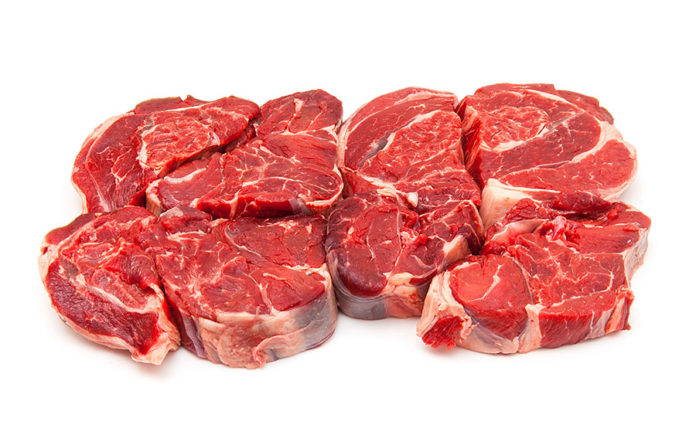

What is carbon footprint?

Carbon footprint is the total amount of greenhouse gas you emit.
Factors that often influence your emissions are:
* Transport (what car you drive).
* Food (diet).
* What powers your heating.
* How you dispose of rubbish.
How do I reduce my carbon footprint?

Reducing individual carbon footprint can overall have a large impact on the total global carbon footprint.
Things you can do:
* Consume local and current seasonal products
* Limit meat intake, especially beef.
* Purchase fish from sustainable fishing companies.
* Use reusable shopping bags and avoid products with excessive packaging.
* Only buy what you need.